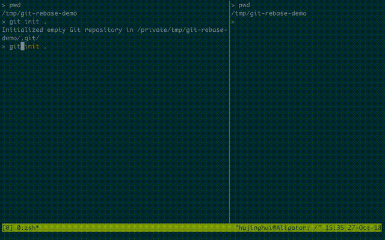

Git 项目管理工具
Table of Contents
1 高层(porcelain)命令
由于 Git 最初是一套面向版本控制系统的工具集，而不是一个完整的、用户友好的版本控 制系统，所以它还包含了一部分用于完成底层工作的命令。 这些命令被设计成能以 UNIX 命令行的风格连接在一起，或者由脚本调用，来完成工作。 这部分命令一般被称作 “底层 （plumbing）”命令，而那些更友好的命令则被称作“高层（porcelain）”命令。
1.1 工作目录、INDEX 和代码仓库
git 代码管理的主要包括以下三个状态，即：工作目录（working directory）、暂存区 （Index）和当前头（HEAD）。

1.2 基础指令
常见的基本命令如下：
git init: 初始化代码仓库，如果没有参数的话直接初始化当前目录git clone <repo>: 将 <repo> 的代码仓库克隆的本地git config user.name <name>: 定义配置项，这里定义的是用户姓名，通常需要 添加 –global 选项来设置全局配置项git add <directory>: 将 <directory> 目录添加到 Index 里面git commit -m <message>: 将 Index 中保存的快照提交到 HEAD，并设置提交信 息为 <message>git status: 显示当前目录状态，包括工作目录、Index 和 HEADgit log: 显示历史提交信息git diff: 显示未提交到 Index 的状态和当前工作目录的差异git help <command>: 查看帮助文档
1.3 修改操作
1.3.1 撤销修改
git revert <commit>: 创建一个提交，用来撤销 <commit> 里的修改，并将它运 用到当前分支git reset <file>: 移除 <file> 中进入 Index 的修改，但是不修改工作目录git clean -n: 显示当前目录中哪些文件会被移除。 -n 是 dry-run，移除是 使用 -f
1.3.2 重写历史
git commit --amend: 将 Index 中的修改和最近一次的提交合并。并且修改提交 信息git rebase <base>: 基于 <base> 重建基当前的分支git reflog: 显示本地仓库中和 HEAD 相关的本地修改操作记录。 –relative-date 按日期过滤， –all 显示所有
1.3.3 重置文件
git reset: 重置 Index 中的修改到最近一次提交，不修改工作目录git reset --hard: 重置 Index 中的修改到最近一次提交， 覆盖 修改工作目 录git reset <commit>: 将当前的分支重置到 <commit> 上，只重置 Index，不修 改工作目录git reset --hard <commit>: 将当前的分支重置到 <commit> 上， 覆盖 修改 工作目录
1.3.4 删除文件
git rm <file>: 从工作目录和 Index 中将 <file> 移除git rm --cached <file>: 从 Index 中将 <file> 移除git mv <src> <des>: 从工作目录和 Index 中重命名文件
1.3.5 暂存修改
git stash: 将工作目录中的修改暂存git stash pop: 回复最近的暂存记录git stash list: 列出使用的暂存项目git stash drop: 销毁最近的暂存记录
1.4 分支管理

1.4.1 分支操作
git branch: 显示本地分支。如果添加 <branch> 则基于当前分支新建一个分支git checkout -b <branch>: 新建 <branch> 分支，并且切换的新建的分支上git merge <branch>: 将 <branch> 合并到当前分支上git merge --no-ff <branch>: 将 <branch> 合并到当前分支上， –no-ff 表 示使用 no-fast-forward 方式
1.4.2 修改分支
git branch -d <branch>: 删除 <branch> 分支git branch -D <branch>: 删除 <branch> 分支，即使没有合并也删掉
1.4.3 重建基
git rebase -i <base>: 交互式基于 <base> 重建当前分支的基，中间会启动编 辑器做相应的修改
1.5 远程操作
1.5.1 远端仓库
git remote add <name> <url>: 添加一个 <name> 的远端仓库，并指向 <url>git remote remove <remote>: 删除 <remote> 远端git remote rename <src> <dec>: 重命名远端
1.5.2 远端拉取
git fetch <remote> <branch>: 拉取特定的 <branch>。将拉下来的数据放到远 端的 ref 里面git pull --rebase <remote>: 拉取当前分支的远端副本，并将远端副本重建到 本地基中。这里通常使用 git rebase 命令git pull <remote>: 拉取远端，并直接将远端的数据合并到本地分支中
1.5.3 推送远端
git push <remote> <branch>: 将 <branch> 分支推到 <remote> 远端中。如果 远端没有分支则重新创建git push origin <remote> :<branch>: 删除 <remote> 远端的 <branch> 分支git push <remote> --force: 强制推送的远端仓库git push <remote> --all: 将本地的全部分支推动的远端仓库git push <remote> --tags: 将本地的全部标签推送的远端仓库， –all 选项 不会自动推送标签，并且和 –tags 不兼容git remote set-url <remote> <upstream>: 将 <remote> 的上行流修改成 <upstream>
1.6 查看追踪
1.6.1 查看历史
git log -<limit>: 查看不超过 <limit> 数量的提交历史git log --oneline: 查看提交历史时，每条信息一行显示git log -p: 查看所有的 diff 历史git log --stat: 查看提交历史的统计信息git log --author=<pattern>: 搜索特定作者的提交历史git log --grep=<patter>: 搜索提交信息git log <since>..<until>: 查看特定时间段的提交历史git log -- <file>: 查看特定文件的提交历史git log --graph --decorate: –graph 图像化显示提交历史， –decorate 显示分支，标签
1.6.2 查看差异
git diff HEAD: 查看工作目录和最近一次提交的差异git diff --cached: 查看 Index 和最近一次提交的差异
1.6.3 忽略文件
.gitignore 可以使用在线工具来生成所需要忽略的文件，详见 gitignore.io ，下 面是一些基本的例子
*.log build/ temp-*
git ls-files --other --ignored --exclued-standard: 查看使用忽略的文件
1.7 配置参数
git config --global user.name <name>: 配置用户名git config --global user.email <email>: 配置邮箱git config --global alias.<alias> <command>: 配置别名git config --system core.editor <editor>: 配置编辑器git config --global --editor: 使用编辑器打开默认配置文件
2 底层(plumbing)命令
早期的 Git（主要是 1.5 之前的版本）的用户界面要比现在复杂的多，因为它更侧重于 作为一个文件系统，而不是一个打磨过的版本控制系统。 不时会有一些陈词滥调抱怨早 期那个晦涩复杂的 Git 用户界面；不过最近几年来，它已经被改进到不输于任何其他版 本控制系统地清晰易用了。
git hash-object -w --stdin
git cat-file -p <sha>
git update-index --add --cacheinfo 100644 <sha-blob> filename.txt
git write-tree
git commit-tree <sha-tree> -m 'message'
git update-ref refs/heads/master <sha-commit>
3 常见工作流
3.1 批量更新当前文件夹下代码仓库
for dotgit in `find $(pwd) -type d -name '.git'`; do cd $dotgit/.. && git pull; done
3.2 初次添加远端并且上传代码
先添加一个远端，然后使用 --all 选项将所有的分支都推送上去，并 --tags 将所
有的标签一起推送上去。值得注意的是： –all 和 –tags 不可以同时使用 。
git remote add origin git@github.com:Username/Repo.git git push -u origin master git push -u origin --all git push -u origin --tags
3.3 Git Rebase 工作流
git-rebase 是用来修改本地提交的，目的是为了让提交历史变成线性。下面是一个 rebase 的例子。

基本的 rebase 示例如下：
git rebase master git rebase master topic # 情况一：如果 topic 和 master 没有同样的提交 # # A---B---C topic # / # D---E---F---G master # # A'--B'--C' topic # / # D---E---F---G master # 情况二：如果 topic 和 master 有同样的提交，rebase 会合并相同的提交 # # A---B---C topic # / # D---E---A'---F master # # B'---C' topic # / # D---E---A'---F master
git-rebase 的 –on-to 选项也是非常重要的，可以跨多个分支来修改本地提交。
git rebase --onto master next topic # 情形一：连续线性依赖 # o---o---o---o---o master # \ # o---o---o---o---o next # \ # o---o---o topic # # o---o---o---o---o master # | \ # | o'--o'--o' topic # \ # o---o---o---o---o next git rebase --onto master topicA topicB # 情形二：移动分支到稳定分支 master 上 # # H---I---J topicB # / # E---F---G topicA # / # A---B---C---D master # # # H'--I'--J' topicB # / # | E---F---G topicA # |/ # A---B---C---D master git rebase --onto topicA~5 topicA~3 topicA # 情形三：剪切部分提交 # E---F---G---H---I---J topicA # # E---H'---I'---J' topicA
3.4 Git Open， 在浏览器中打开 git 代码仓链接
git-open 是一个扩展 git 子命令的工具，它添加了 git open 的扩展，使得在命令行
中可以直接调用浏览器中打开当前 git 远程代码仓库中。目前支持 GitHub, GitLab,
Bitbucket 这些远端网站。
3.4.1 安装
直接通过 yarn 安装即可。
yarn global add git-open
3.4.2 使用方法
git open: 打开当前项目的网站git open <remote>: 打开特定 <remote> 的网址git open <remote> <branch>: 打开特定 <remote> 的分支 <branch> 的网址